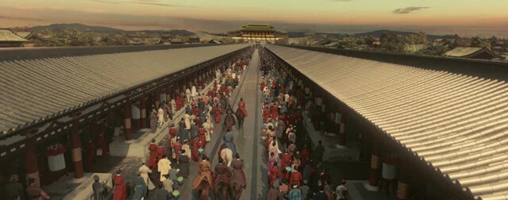

The Sui, Tang and Five Dynasties were the most important period in Chinese history. From the end of the 6th century to the mid-10th century A.D., feudal rule lasted more than 300 years. Tang Dynasty was the most glorious dynasty in Chinese history. It was powerful, materially abundant, and famous in frontiers and overseas.
In 581 A.D., Emperor Wen of Sui, Yang Jian seized the Northern Zhou regime and established the Sui Dynasty, and then destroyed Chen and unified ancient China. However, Emperor Yang of the Sui Dynasty was exacting and profligate, which made the Sui Dynasty last for only 39 years.
Since the founding of Li Yuan and the pacification the various forces. Li Shimin succeeded to the throne as Emperor Taizong. During his reign for more than 20 years, logical administration and harmonious people. Historically, this peaceful and prosperous era was called the Governance during the Zhenguan Reign. After that, until ten years of Emperor Xuanzong of the Tang Dynasty, the country was prosperous and the people were safe and the society was rich, and historically known as the KaiYuan Period.
After the An Lushan Rebellion, the Tang Dynasty changed from prosperity to decline. In 907, Zhu Wen destroyed the Tang Dynasty and established the Liang Dynasty, plunging ancient China into chaos and division for half a century. Because the imperial courts of Liang, Tang, Jin, Han and Zhou rose up one after another and occupied the Central Plains, together with more than a dozen feudal small countries, they were known as the Five Dynasties and Ten Kingdoms in history.
The Tang Dynasty was strong, economically prosperous, and extensively exposed to ethnic minorities, which was deeply influenced by the concept of ethnic minorities. At this time, the social atmosphere is open, and women pursue fashion and novelty.
In the heyday of the Tang Dynasty, both official prostitutes and domestic prostitutes wore heavy makeup and deliberately decorated themselves. In such background, the development and change of women's makeup are relatively rapid, and many novel makeup methods have emerged, causing widespread imitation and follow-up. At that time, the capital, Chang'an, was stationed by a large number of people from other ethnic groups and countries, which seemed to have become the center of cultural exchanges between China and the West.
Due to the integration of multiculturalism, women in Chang'an City's makeup is more fashionable, gorgeous, bold and enthusiastic. It is also because the Tang Dynasty was deeply influenced by a foreign culture that women showed the aesthetic characteristics of unconventional teaching and breaking through the shackles.
Therefore, various forms of facial makeup patterns have been fully developed at this time. Different eyebrow styles and lip styles, with variable and exaggerated hairstyles, rich facial embellishment style, have created colorful and varied makeup styles for women in the Tang Dynasty.
To sum up, the makeup of women in the Tang Dynasty includes applying lead powder, applying rouge, drawing eyebrows, pasting Huadian, Mianyan, Xiehong and applying lipstick. In addition, women's makeup materials are not only made from natural materials, some eyebrow drawing and rouge materials can also be made by hand. All this shows that the makeup technology of Chinese women during the Tang Dynasty has developed to a highly mature stage, forming a symbol of the image of classical Chinese women.
The hairstyle of the Sui Dynasty was relatively simple. Most of the hairstyles were flatted for two or three layers, pushed up layer by layer, some like wearing a hat, and some like clouds overlapping. These styles are of a certain universality, with little difference in rank.
The hairstyle of women in the Tang Dynasty is very rich, both inheriting the previous dynasty and innovative. In the early Tang Dynasty, women's hairstyles changed less, but their appearance was no longer as flat as that of the Sui Dynasty, and there was a tendency to stand upwards. In the middle of the Tang Dynasty, the bun became more and more towering, and the style was constantly new.
In the early Tang Dynasty, the noblewomen liked to comb their hair up into a towering bun, such as the Ban Fan Ji (半翻髻) combing the hair into a knife shape and standing upright on the top of her head.
In addition, Hui Hu Ji (回鹘髻) was also popular at that time, which was also raised upwards style. Hui Hu (回鹘, Uyghur Khaganate) is an ethnic minority in northwest China and the predecessor of the Uighurs.
This kind of hairstyle was widely popular among the royal family and nobles, and was gradually rare in Kaiyuan period (713 AD - 741 AD) and Tianbao period (742 AD - 756 AD).
The women of this period were plump, with broader clothing and long, floor-length skirts. In addition, a few ladies are also popular with wigs and fake buns to make their hair look fluffy.
In the middle and late Tang Dynasty, women's buns imitated Tibetan and popularly combed the style of the "Man Huan Zhui Ji (蛮鬟椎髻)". This style is to comb the hair into an upward and vertebral bundle, then sideways, and decorate it with hairpins and combs.
In the late Tang and Five Dynasties, the height of women's buns increased again, and flower arrangement decoration was added to the bun. The flower decoration popular in the early Song Dynasty continued the customs of the late Tang Dynasty and the five dynasties, especially the peony decoration, which showed that women were more charming and beautiful.
In a word, there were many bun styles of women in the Tang Dynasty, which also gave rise to different names, but most women liked advocated high buns and paid attention to gorgeous ornaments, especially in the aristocratic women.
Tang Dynasty women also paid more attention to modifying hair on the temples, and cooperated with the style of the bun, and there were differences in thickness, density, size and other aspects, and the style was exquisite. Most women in the Tang Dynasty preferred thin temples, the so-called Chan Bin (蝉鬓).
During the Sui and Tang Dynasties, the men's hairstyle was still tied in a bun with a headscarf on the outside. At that time, the main form of the headscarf was the Fu Tou (幞头).
Women powdering on their faces is a form of makeup that has remained unchanged throughout the generations in ancient China. In the Middle Tang Dynasty, U-shaped neckline were popular. Because the neckline was low, it was easy to expose the chest. Therefore, in addition to powdering the face, even white powder was wiped on the neck and chest to whiten the makeup role.
In addition to the white powder on the face called white makeup, there is even "Zhe Mian Zhuang (赭面妆), which is painted in red-brown color. The custom of Zhe Mian Zhuang originated in Tibetan. After Zhenguan period, with the Princess Wencheng married King Songtsen Gampo of the Tibetan Empire in 641, cultural exchanges between the two ethnic groups continued to expand, and Tibetan makeup was also introduced to the Central Plains. With its unique makeup characteristics, it was imitated by many women and became popular for a while.
During the five dynasties, face decoration is developing rapidly. Women often made flower and bird patterns of different sizes and pasted on the faces. This kind of makeup method is rarely seen in the Central Plains. According to historical records, this kind of cosmetics is made of grease and stored in the silver box, and when used apply to the face through the breath of heat.
At the end of the Tang Dynasty, there was also a three-white makeup method, that is, white powder was painted on the forehead, nose and chin, which was very special.
In the Tang Dynasty, red makeup was popular. The order was to apply white powder first, and then apply rouge, which generally formed a strong makeup. The method of applying rouge at that time was similar to the way women apply blush nowadays.
The variety of red makeup developed during the Tang Dynasty, and it was classified according to color and range. The thick is delicate while the thin is elegant, sometimes dyed on the cheeks, sometimes almost all the face red, and sometimes dyed on both eyes and eyebrows.
The Mian Ye (面靥, cheek makeup) of women in the Tang Dynasty was usually dyed with rouge. Before the prosperous Tang Dynasty, the Mian Ye was mostly two dots like soybeans. After the prosperous Tang Dynasty, the style of Mian Ye became rich. Some were shaped like coins, some were shaped like peaches and apricots, and some were decorated with various floral patterns around the Mian Ye, which were called Hua Ye (花靥). Floral patterns are not necessarily on the corners of the mouth, but also on both sides of the nose. After the late Tang and Five Dynasties, the dimple makeup became more and more complicated. In addition to the circle dot floral pattern, bird and beast graphics were added.
The makeup style of Xie Hong (斜红, makeup between the temples and the corners of the eyes) existed as early as the Northern and Southern Dynasties, and the style was more prosperous in the Tang Dynasty. The faces of terra-cotta women excavated from Tang tombs are painted with two red Xie Hong. Generally speaking, most of the Xie Hong of women in the Tang Dynasty are depicted between the temples and the cheeks. Some are neat as crescents, and some are more complicated as scars.
The Tang Dynasty continued the forehead decoration of women in the previous dynasty. Women applied yellow powder on the center of the eyebrows, which is called E Huang (额黄).
The makeup method of Hua Dian (花钿, a kind of forehead makeup) was mainly popular in the palace from the Qin Dynasty to the Sui Dynasty, and was widely popular after the Tang Dynasty. It is very common for women in the Tang Dynasty to use Hua Dian ornaments on their foreheads (sometimes at the corners of their eyebrows). The simplest Hua Dian ornament is a dot. But, most of the Hua Dian ornaments are made of gold foil, colored paper, fish gill bones, kingfisher feathers and other materials, cut and carved into various patterns. They are pasted on the center of the forehead or on the corners of the eyes with He Jiao (呵胶). It is said that the He Jiao is made of the fish’s swim bladder and has good viscosity. To remove the Huadian from the face, apply hot water to it before tearing it off.
Plum blossom is the most common style of Hua Dian, mainly influenced by the Princess Shouyang of the Southern Dynasty. In addition, there are various forms of flowers, fish and birds, and some are also shaped like ox horns, fans, peaches, or other abstract patterns.
In terms of color, the color of Hua Dian is richer than that of E Huang, which is mainly divided into three categories: golden yellow, emerald green and bright red; Some retain the color of raw materials, such as gold foil is golden, fish gill bone and mica sheet are white, kingfisher feather is emerald green, and colored paper has different colors; Sometimes they can also be dyed into various colors according to their needs.
The slender eyebrows style of the Han Dynasty was still favored by women in general until Sui Dynasty.
Before the Tang Dynasty, women used Dai (黛) as the main material for eyebrow drawing. In the Tang Dynasty, women began to use Yan Mo (烟墨) to draw eyebrows. The manufacturing of Yan Mo started during the Wei and Jin dynasties, using ink and coal as raw materials, which was mainly used for writing. This ink-making technology had great development during the Tang Dynasty.
The style of eyebrow drawing in the Tang Dynasty is the most prosperous in the past dynasties, and various eyebrow shapes have appeared. From the picture albums and archaeological data of the Tang Dynasty, there were 15 or more kinds of eyebrow styles popular in the Tang Dynasty.
From the evolution process of the eyebrow shape, the early Tang Dynasty popular thick and wide, and long eyebrow shapes, the drawing method is different, some are sharp heads and wide tails, some are two heads sharp, some are eyebrow heads together, and some are eyebrow tail apart. In the Kaiyuan and Tianbao years, slender eyebrows were popular, such as the Liu Ye Mei (柳叶眉, salix leaf eyebrow) and the Que Yue Mei (却月眉, half-moon eyebrow).
The salix leaf eyebrow, also known as the willow eyebrow, is named for its thin eyebrow head, broad eyebrow waist, and slender eyebrow tail, as beautiful as willow leaves; But the half-moon eyebrow is also called the moon ridge eyebrow, which is slightly wider than the salix leaf eyebrow. Its two ends are sharp and curved like a crescent moon.
Short and wide eyebrows began to be popular in the late Tang Dynasty, especially in the middle and late Tang Dynasty. In the years of Yuanhe and Changqing, in addition to being thick and short, the eyebrow shape was also drawn as low and oblique as Chinese character "八", called Ba Zi Mei (八字眉). The style was not the same as that of the Han, Wei and Six Dynasties. At that time, whether in the palace or among the people, this kind of eyebrows style were widely popular among women.
Generally speaking, the eyebrows of women in the Tang Dynasty generally preferred colorful, but they did not lose elegance. Occasionally, they also painted light eyebrows, represented by the lady of the state of Guo, and won by natural beauty.
The Tang Dynasty had the most variety of applying lipstick styles in all dynasties. From the point of view of color, in addition to the use of vermilion, rouge itself to express the shade of lip color, Tang Dynasty women also like to use the color of Tan (reddish brown).
Kou Zhi (口脂), which is used to apply lipstick has also developed to a certain shape at this time. Kou Zhi was a tubular object similar to modern lipstick at that time.
In the Tang Dynasty, besides women, men also had the habit of using Kou Zhi, but the was generally colorless, and it was a transparent moisturizing lipstick.
And the Kou Zhi used by women contains color and has a strong covering function to change the mouth shape and play the role of makeup. The thick lips can be drawn into thin shapes, and the small lips can be drawn into wide shapes, thus creating the artistic beauty of applying lipsticks.